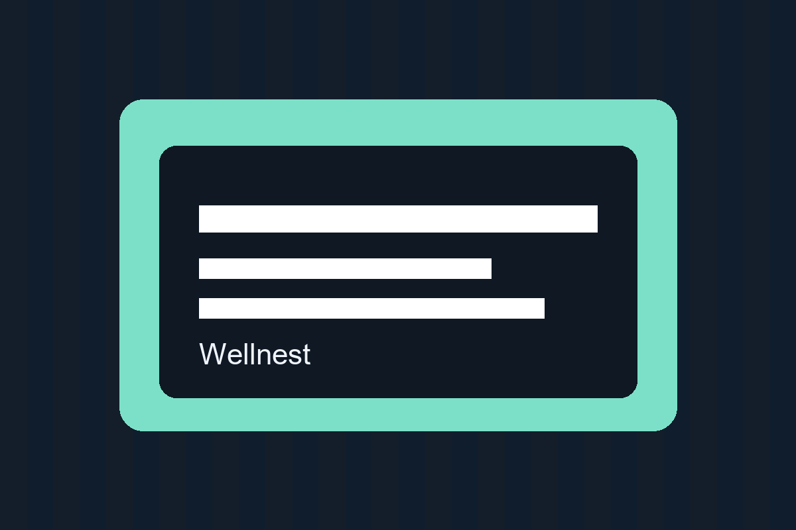
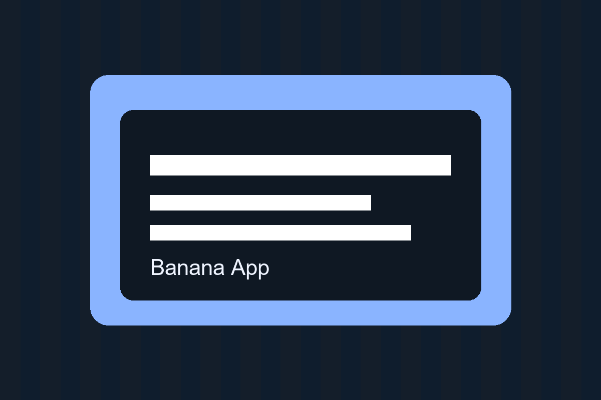

Frontend
- HTML5
- CSS3
- JavaScript
- Responsive Design
IT Student • 4th Year
I am currently enrolled at Leyte Normal University, and I am 21 years old. As a 4th year IT student, I am building my foundation in software development, problem-solving, and practical technology solutions. I enjoy creating web applications, user-friendly interfaces, and projects that can help people in real-world settings.

About Me
I’m an IT student who is passionate about creating meaningful digital solutions. I enjoy learning through real projects, especially in web development, system design, and user-focused interfaces. My goal is to build skills that bridge technical knowledge with practical application.
I’m especially interested in developing systems that improve daily work, support organizations, and make information easier to access and manage. I value clean code, good user experience, and continuous growth as a future software professional.
Skills
Projects

A system for managing student information, enrollment records, course data, and academic monitoring in a simple and organized interface.
Discuss project
A practical solution for tracking products, sales transactions, stock levels, and reports to support daily business operations.
Explore idea
A digital library system for managing books, borrowing records, member logs, and returns in a structured and efficient way.
Explore idea
A solution designed to handle patient information, appointment scheduling, consultation data, and simple medical record tracking.
Explore idea
A dashboard for tracking tasks, schedules, employee attendance, and team productivity in a clean, data-driven interface.
Explore idea
An online product system for browsing items, managing categories, displaying inventory, and simplifying customer orders.
Explore ideaEducation
Current Status
School
Leyte Normal University
I am currently enrolled at Leyte Normal University, where I am strengthening my skills in information technology, software development, and systems thinking. I am 21 years old and focused on building both technical knowledge and practical project experience through hands-on development work.
Contact
I am open to internship opportunities, collaborative projects, and learning experiences where I can contribute and continue improving my development skills.